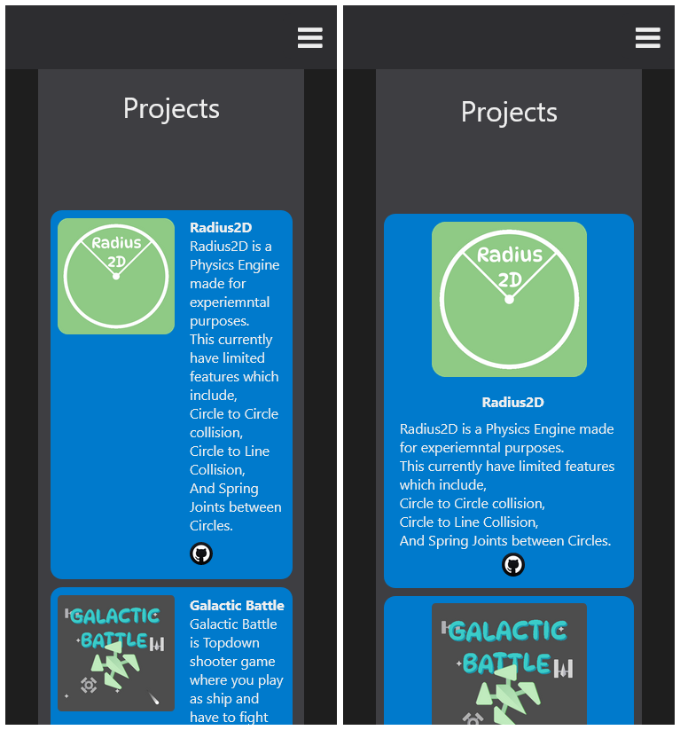
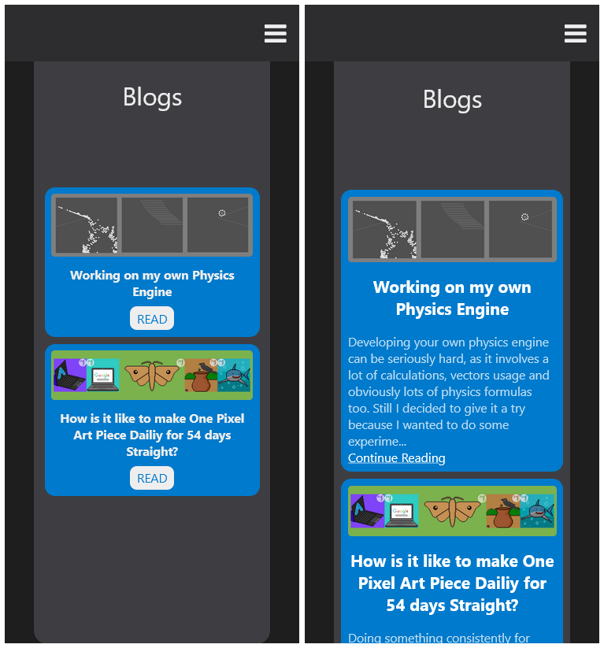

It has been almost three months since I got admission in Higher Secondary School, I don't remember it by a date but by the pattern of my GitHub contribution graph. After the admission I found very little to no time for working on any of my Projects, so I decided to do that only on weekends.
The two of the projects I have been working on within this time are Radius2D (A custom physics engine) and my Portfolio Website.
Progress of both Projects
Radius2D
Radius2D is now capable of having circles finely react with each other, they also react fairly smoothly with lines and can also be connected through springs. There are currently two sample simulations, Circular Soft Body Simulation and an Elastic Cloth Simulation.
Soft Body Simulation uses a bunch of circles connected with each other by springs and form a circular shape, which is then dropped from a position which makes the Soft Body feel jiggly.
Cloth Simulation uses a lot of circles ( with zero radius ) connected with each other using springs and forming a rectangular structure. It also uses keyboard input of showing the wind effect and mouse input for tearing the cloth apart by removing springs from the list.
I also have made a small YouTube Video about how I made this Simulation.
Portfolio Website
My portfolio website was started on 4th of September and was deployed on 8th of September this year, since then I had been tweaking it's design constantly.
As design of Projects section have been changed so it looks better with narrow screens. On the Left it is Older View of Project's section, on the Right it is the New one.
Blogs section design have also been tweaked to show initial few words of the blog post. On the Left is Older View and on Right is the tweaked one.
Future of Radius2D
This was started just for the purpose of learning experience and also for fun which is why I don't have any specific goals for it, but something I would want to do to carry on the GitHub contribution graph’s pattern I would probably add some more objects of different shapes like those of Axis-Aligned Bounding-Box (AABB) and Separating-Axis-Theorem (SAT) and most probably Capsules too.
Other than that I don't have any specific goals for my website too other just adding a Pixel Art Section on the Homepage.
Anyways I you want to try out Radius2D, you can download the NuGet Package For Radius2D.